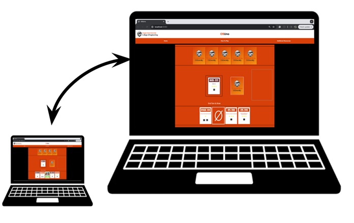

OSUNO is an online card game inspired by the classic title of Uno. In this game, four out of seventeen available College of Engineering majors are selected as suits for two players to use in a deck. The game features major cards, giving a broad overview of the major, course cards that detail highlighted courses out of a major's curriculum, and action cards to keep the rounds moving. Players win the game by playing all the cards from their hand before the opposing player.
This project aims to deliver a concise edutainment experience allowing students to explore the various major options present within the College of Engineering at OSU.
First-year students often haven’t explored all the major options available to them in the College of Engineering. These students may seek a unique and entertaining way to become familiar with their options.
Beyond entertainment purposes, our project delivers more thorough and guided exploration as you receive class and major breakdowns while playing through the game. This provides discoverability to majors like Radiation Health Physics that are frequently overlooked, and gives students more of an idea on what they can expect in their time at OSU.
The project partner who came up with the project was Natasha Mallette, instructor as well as Director of Engineering+ at Oregon State University.
The codees and design team of the project's initial development are Sophia Bouck, Jaaron Green, Hoang Khuong Tang, and Matthew Wells.
You may visit the original project GitHub page at this link. Feel free to download it and run it yourself! Instructions are included.
There are several ways you can get help. The first is to familiarize yourself with the documentation found at the aforementioned GitHUb page. You could also reach out to us by submitting an Issues post on GitHub. Finally, you could try contacting us directly via our email.